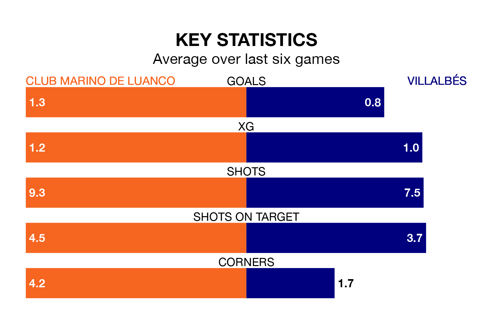

Club Marino de Luanco face Villalbés on Sunday seeking to protect their long unbeaten run in Segunda División RFEF Group 1.
Club Marino de Luanco are unbeaten in six, with two wins and four draws, ahead of the 4pm kick-off.
They face a Villalbés team who have won one and drawn two over the same number of games.
Club Marino de Luanco are 12th in the table after 20 games, of which they have won four and drawn 11, earning 23 points.
Villalbés are one place ahead of the home team in 11th, with six wins and seven draws putting them on 25 points.
With 16 goals in 20 games so far this season, the visitors are the league's joint-third-lowest scorers with 0.8 goals per game. But they are conceding fewer than average too, letting in 18 goals at a rate of 0.9 per game.
Club Marino de Luanco are also below average scorers, with 0.8 goals per game, compared to a league average of 1.1. They have also conceded 0.8 goals per game.
Club Marino de Luanco's last match was on January 28, a 2-2 draw against Deportivo La Coruña B.
Villalbés lost 1-0 against Racing Santander B last time out, also on January 28.
Updated: 09:21 (UTC), 30/01/24